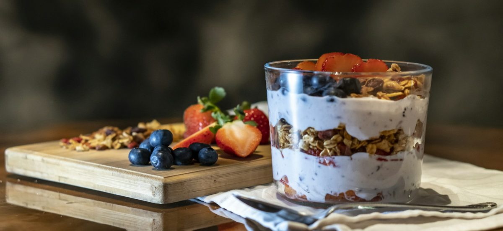

Clara Wendover
Clara WendoverColazione e insulino-resistenza: 5 idee anti-picco
Di Clara Wendover · tempo di lettura 4 minuti

Se hai l'insulino-resistenza o il prediabete, la colazione è il pasto che può cambiare la giornata. Cornetto e cappuccino zuccherato, biscotti o fette biscottate con la marmellata fanno salire rapidamente la glicemia: dopo un paio d'ore arrivano fame, stanchezza e voglia di qualcosa di dolce.
La buona notizia è che non serve rinunciare al piacere della colazione: basta cambiarne la composizione.
Le 3 regole della colazione anti-picco
- Proteine a ogni colazione: yogurt greco, uova, ricotta, latte, frutta secca. Saziano e rallentano l'assorbimento degli zuccheri.
- Carboidrati integrali e in quantità moderata: avena, pane di segale o integrale, frutta intera invece del succo.
- Grassi buoni e fibre: noci, mandorle, semi di chia o di lino, olio extravergine d'oliva.
5 idee pronte in pochi minuti
1. Yogurt greco, mela e noci
Yogurt greco bianco, mezza mela grattugiata con la buccia, una manciata di noci e un pizzico di cannella, che dà una sensazione dolce senza zucchero.
2. Toast di segale con ricotta e pomodorini
Una fetta di pane di segale, ricotta, pomodorini, origano e un filo d'olio. Salato, veloce e saziante.
3. Porridge di avena salato con uovo
Fiocchi d'avena cotti nel brodo vegetale con spinaci, un uovo strapazzato sopra e una spolverata di parmigiano. L'avena contiene beta-glucani, fibre che rallentano l'assorbimento dei carboidrati.
4. Chia al latte con frutti di bosco
Semi di chia lasciati in ammollo nel latte la sera prima, con frutti di bosco al mattino. Perfetto per chi esce presto.
5. Al bar
Cappuccino senza zucchero e, al posto del cornetto, un toast con prosciutto cotto e formaggio o uno yogurt bianco. Se proprio vuoi il cornetto, sceglilo semplice e mangialo dopo qualcosa di proteico.
Vuoi tutte e 7 le colazioni con la lista della spesa?
Scarica gratis la guida 7 colazioni anti-picco.
Scaricala gratisNella guida Insulino-Resistenza: la Guida Pratica trovi il piano completo di 28 giorni con menù, liste della spesa e 60 ricette mediterranee per tutti i pasti.
Questo articolo ha scopo informativo e non sostituisce il parere del medico. Se hai il diabete o assumi farmaci per la glicemia, parlane con il tuo medico prima di cambiare alimentazione.